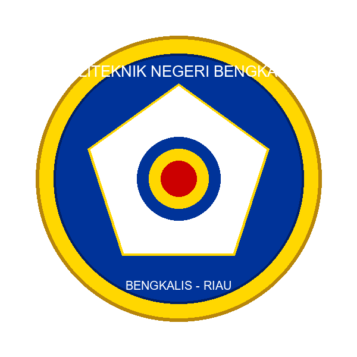

Politeknik Negeri Bengkalis
Jurusan Teknik Informatika • D3 Teknik Informatika
Semester Genap
T.A 2025/2026
Sistem Enterprise
Warung Master Cafe
Platform Point of Sales & Manajemen Operasional F&B Terintegrasi Penuh. Dibangun dengan arsitektur modern untuk skalabilitas dan efisiensi.

Cakupan Sistem & Penilaian Terintegrasi
Multi-Role Auth
Sistem autentikasi aman dengan pemisahan hak akses: Admin, Kasir, & Pelanggan. Rute terlindungi middleware.
Smart POS & QR
Multi-channel order. Konsumen bisa scan QR di meja (Self-service) atau transaksi langsung di kasir POS.
Inventory & Resep
Manajemen stok bahan baku (Raw Materials) yang terpotong otomatis berdasarkan komposisi resep menu terjual.
HR: Absensi & Shift
Pengelolaan operasional karyawan. Meliputi perekaman absensi harian, pembagian shift kerja, dan log aktivitas.
Manajemen Keuangan
Sistem arus kas real-time. Pencatatan total pendapatan kasir harian serta log pengeluaran/belanja operasional.
Sistem Promo Validasi
Fitur marketing dengan kode diskon dinamis. Terintegrasi dengan limit kuota, rentang tanggal, dan hari khusus.
Keamanan & Void Log
Audit trail ketat. Memiliki log pembatalan pesanan (Void Log) untuk melacak kecurangan kasir beserta alasannya.
Reporting & Ekspor
Sistem analitik terpadu. Generate laporan pendapatan, shift, dan stok harian dengan fitur cetak PDF langsung.